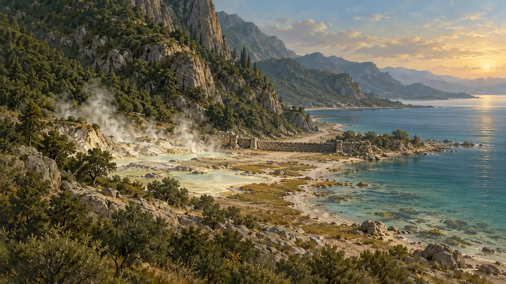
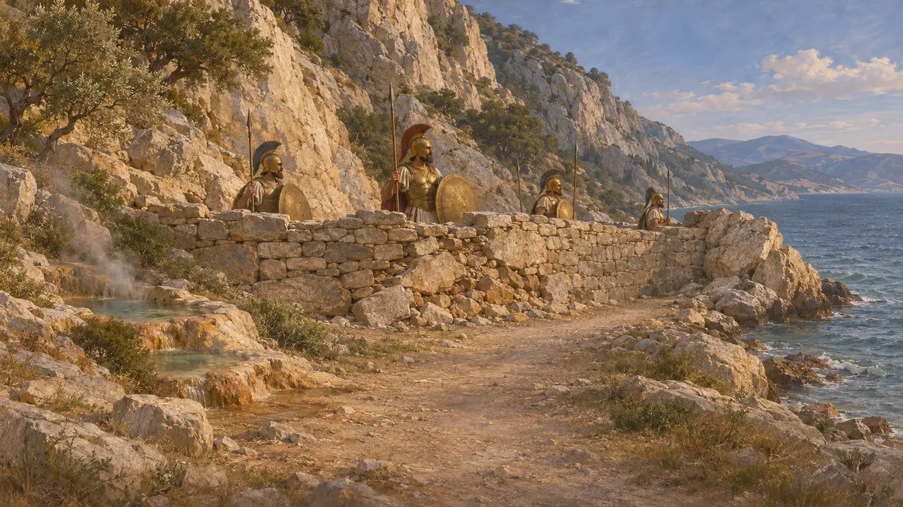
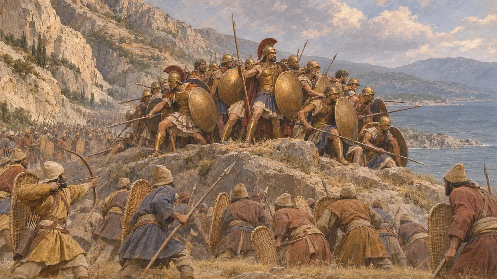
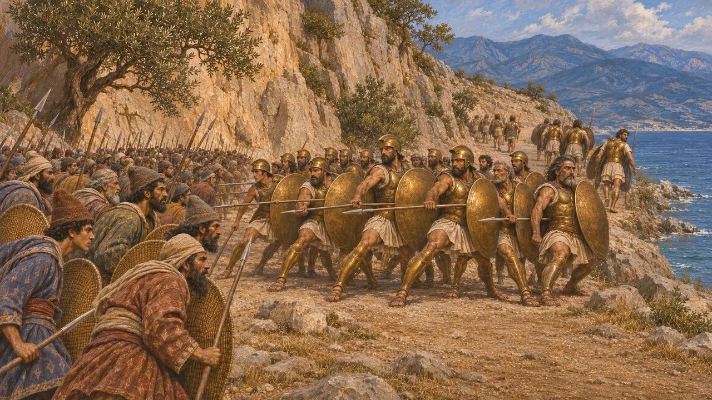
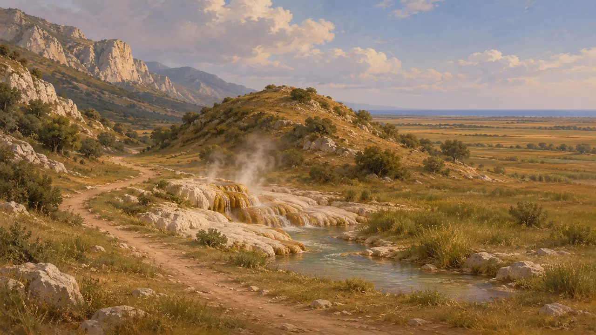
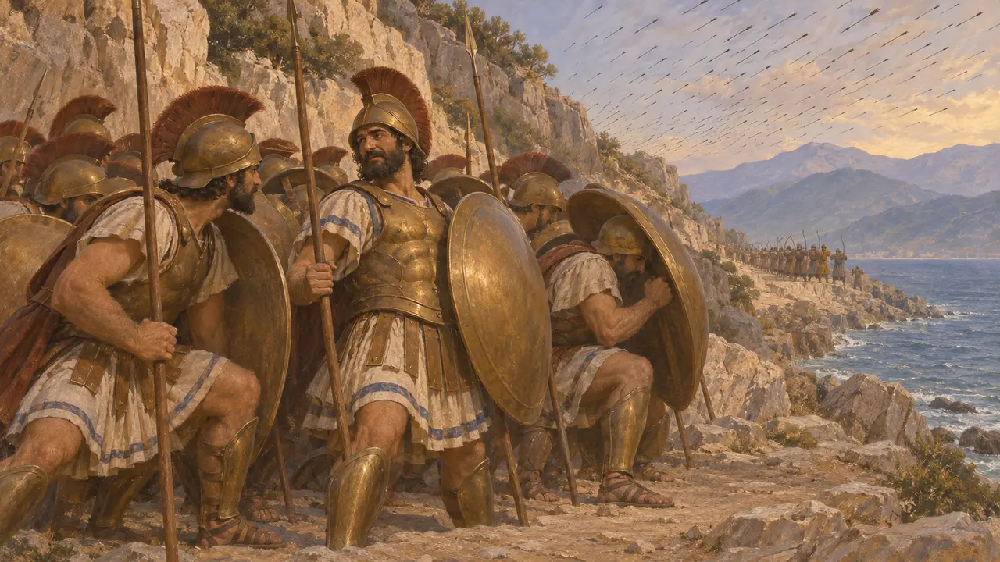

Termópilas
Desfiladeiro costeiro na Grécia central, onde Xerxes rompeu a linha de Leônidas, 480 AEC
No jogo: Nível 10: Os Portões Quentes
As Termópilas, os Portões Quentes, eram um desfiladeiro estreito entre as montanhas e o Golfo Malíaco, na principal rota terrestre da Tessália para a Grécia central. Em 480 AEC, uma pequena força grega comandada pelo rei espartano Leônidas bloqueou ali o exército de Xerxes durante três dias de combate, até que uma trilha pela montanha permitiu aos persas contorná-la. Os gregos perderam a batalha, mas sua resistência tornou-se uma das histórias mais recontadas da guerra.
No jogo: O décimo nível se passa aqui, em 480 AEC. A crônica segue Heródoto quanto ao desfiladeiro, suas fontes termais e a muralha fócia. Seus três dias correspondem aos três dias de combate que ele relata, travados depois de Xerxes ter esperado quatro.

O desfiladeiro e sua muralha
Relato antigoHeródoto descreve uma estrada espremida entre encostas íngremes e o mar, com fontes termais que deram nome ao lugar. Muito antes de 480 AEC, os fócios haviam construído uma muralha atravessando o desfiladeiro para conter as incursões tessálias, e naquela época ela estava em grande parte em ruínas. Os gregos a reconstruíram e fizeram dela sua linha de defesa. Ao mesmo tempo, a frota guardava o estreito do Artemísio, ali perto, de modo que a defesa por terra e por mar agia em conjunto.
Herodotus 7.175-177

Três dias de combate
Relato antigoHeródoto conta que Xerxes esperou quatro dias, depois lançou medos e císsios contra a muralha e, após eles, os Imortais sob o comando de Hidarnes, mas a linha resistiu. Efialtes de Málide mostrou aos persas a trilha de Anopeia, e Hidarnes conduziu tropas por ela durante a noite, passando pela guarda dos fócios. Leônidas dispensou a maior parte dos aliados. Ficou com os espartanos e os téspios, e com tebanos que, segundo Heródoto, manteve como reféns. Os últimos combatentes morreram numa colina baixa.
Herodotus 7.210-225

Números e motivos
DisputadoHeródoto estima o exército terrestre de Xerxes em 1.700.000 homens, número que os historiadores rejeitam como extremamente exagerado. As estimativas modernas são bem menores, embora variem muito. Os gregos somavam talvez sete mil. Heródoto diz que Leônidas permaneceu por honra e por causa de um oráculo, ao passo que muitos historiadores veem ali uma retaguarda cobrindo a retirada. Nenhum texto persa menciona a batalha, e para os persas ela provavelmente foi apenas um desfiladeiro forçado durante a marcha rumo a Atenas.
Herodotus 7.60, 7.202-203, 7.220; J. F. Lazenby, The Defence of Greece, 1993

O terreno hoje
Nos registrosDesde então, o rio Esperqueu depositou sedimentos, de modo que a costa fica hoje a vários quilômetros da antiga estrada e o desfiladeiro se tornou uma ampla planície. Em 1939, Spyridon Marinatos escavou a colina de Colono, que Heródoto aponta como o cenário da última resistência, e encontrou grande quantidade de pontas de flecha de bronze e de ferro. As fontes termais ainda correm ao lado da rodovia moderna.
Excavations of S. Marinatos on Kolonos, 1939; Herodotus 7.225

Ditos dos espartanos
Lenda posteriorA batalha logo reuniu frases célebres. Heródoto conta que Dieneces, ao ouvir que as flechas persas esconderiam o sol, respondeu que então os gregos lutariam à sombra. A resposta "venham buscá-las", supostamente dada a uma exigência persa de que entregassem as armas, aparece apenas em Plutarco, mais de cinco séculos depois. Ambas devem ser lidas como contos morais gregos, e não como registros do dia.
Herodotus 7.226; Plutarch, Sayings of the Spartans
Fontes
- Herodotus, Histories 7.175-233
- J. F. Lazenby, The Defence of Greece 490-479 BC, 1993
- P. Cartledge, Thermopylae: The Battle That Changed the World, 2006
- P. Green, The Greco-Persian Wars, 1996
- P. Briant, From Cyrus to Alexander, 2002
- Plutarch, Sayings of the Spartans